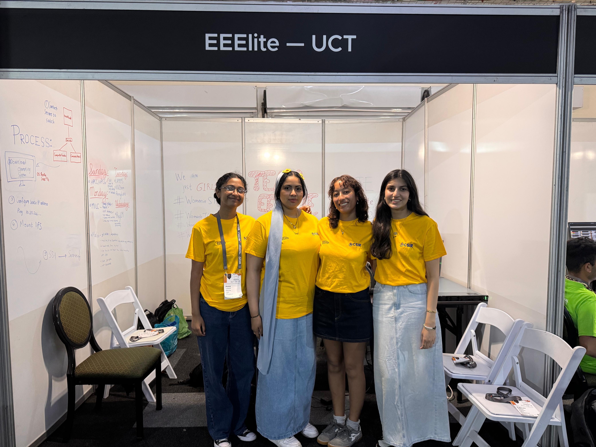
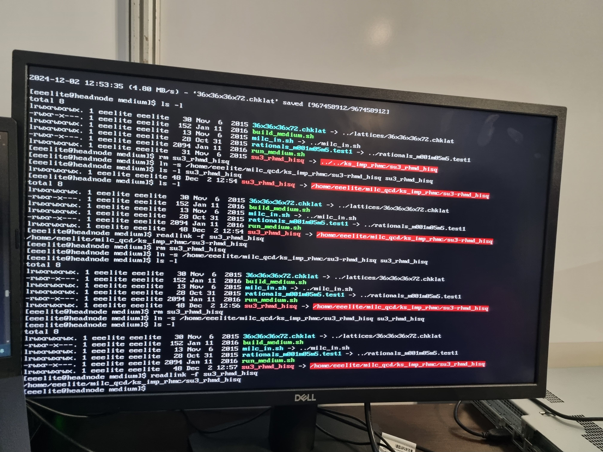
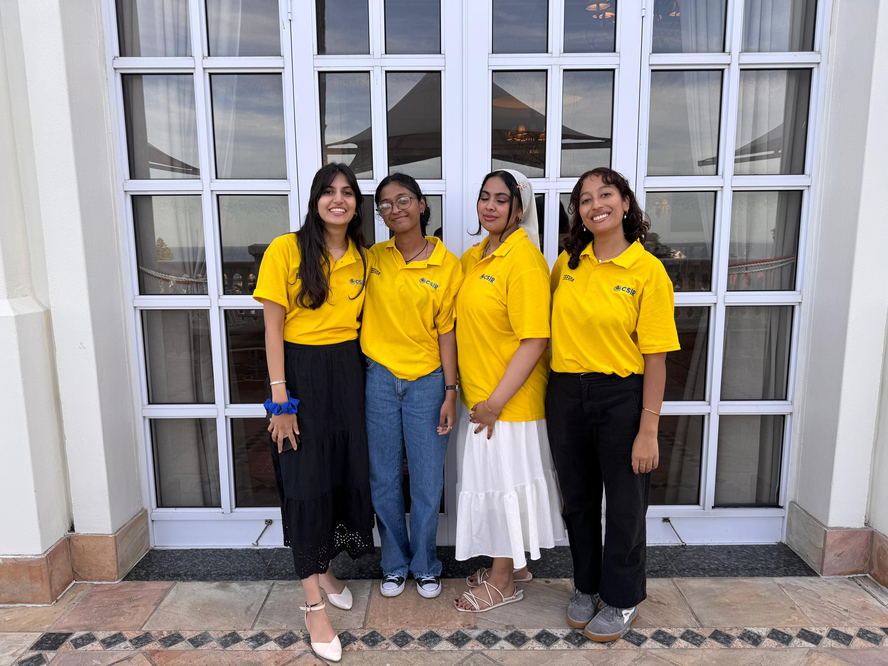
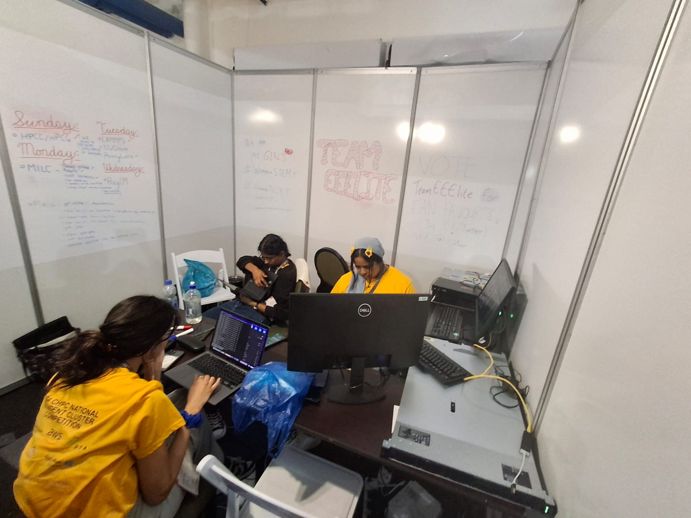
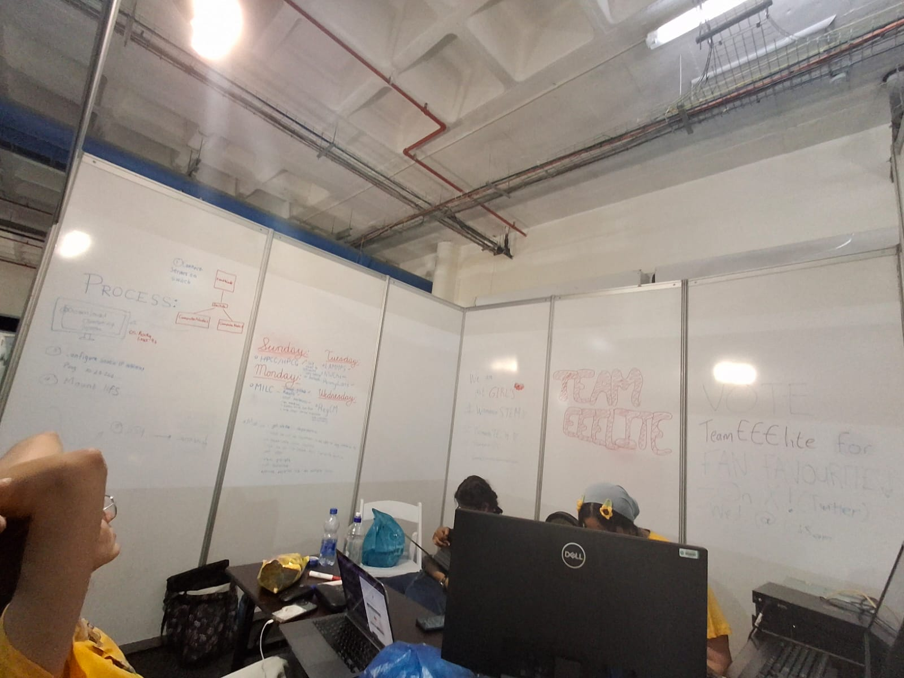

Designing a HPC cluster on a fixed budget.
A two-stage national competition: a selection round designing a cluster on paper (and in the cloud), then five days on the competition floor turning a R400,000 budget into a working, benchmarked cluster. My part covered hardware selection, low-level Linux setup, and secure remote access — the layer that let four of us actually run the thing together.
Before the national round, our pre-round project had us stand up a cluster on Microsoft Azure and write up our own GitHub repository of set-up instructions for future competition participants. The selection round that followed was a week-long exercise: in teams of four, we learned the fundamentals of HPC, then designed a cluster optimised for a specific workload (MLPerf) — choosing CPU, GPU and storage specifications — stood it up virtually as a 3-node OpenStack cluster on Rocky Linux 9.3, and operated it remotely over Windows PowerShell. We closed the round by presenting our design to a panel of judges.
National round — what I owned on the team
Hardware selection under budget, then physically assembling the 3-node cluster from bare metal on delivery day — connecting nodes through an Aruba switch and installing Rocky Linux 9.4 on each from a USB image. From there I handled the low-level system configuration: static IP addressing with a shared gateway and DNS, NFS to export /home from the head node so user files and binaries were available cluster-wide, and configuring ZeroTier as our secure remote-access layer.
For ZeroTier, I set the head node up as the controlling point: created a private network, joined the head node and every teammate's laptop to it, authorised each device from the network controller, and assigned it an address on our private subnet. That gave the whole team SSH access into the head node — and from there the compute nodes — from our own laptops, without opening ports on the head node's public-facing firewall.
I also owned the MATLAB Monte Carlo Pi benchmark: installing MATLAB and the Parallel Computing Toolbox across every node via the shared NFS directory (so the install only had to happen once), then tuning parfor loops and parpool configurations (threads vs. processes vs. local) and chunk size to lift sample throughput above the default single-threaded baseline.





This project drew directly on coursework in networking, computer architecture, and parallel/distributed computing — but the bigger lesson was leadership. As team captain, I learned to delegate and check in across four workstreams at once so every benchmark kept moving under a five-day clock. It gave me a real anchor for the professionalism courses at UCT — turning principles I'd only read about into something I could see the necessity of first-hand — and it's the closest I've come to the real trade-offs of taking a design from a budget spreadsheet through to a working, benchmarked system.